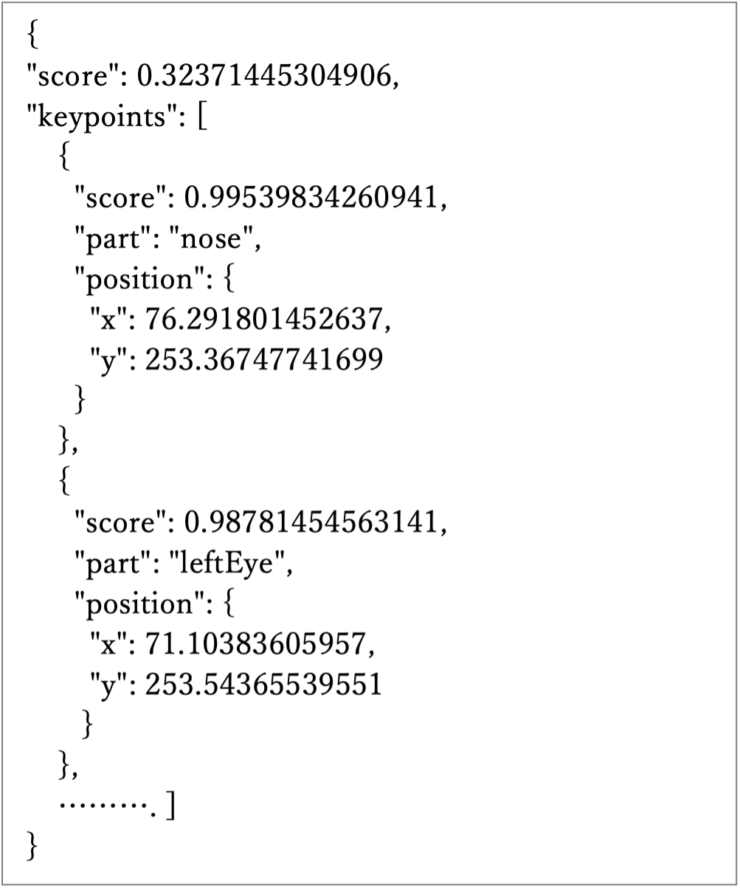

事前機械学習モデル PoseNetを使う
カメラが捉えた画像内の人の姿勢(手や足、目や口の位置)に応じた処理をするp5.jsのスケッチを作成してみましょう。ml5.jsライブラリは、カメラ画像を認識して、人のポーズや顔のパーツの位置を検知するための、事前機械学習モデルを提供しています。
ml5.jsは、Googleが開発した機械学習システムTensorFlowを活用して開発されており、自分のスケッチに機械学習機能を組み込み、簡単な「AI」プログラムを作ることを助けるライブラリです。
ここでは PoseNetを使ってみます。
ml5.jsライブラリを使うために、次のscriptタグをindex.html内に指定します。
<script src="https://unpkg.com/ml5@0.12.2/dist/ml5.min.js"> </script>ネットワークを経由してライブラリを配信する仕組みであるCDN(Contents Delivery Network)のサイトを通じて、ml5.jsライブラリを参照する指定です。
PoseNetの使い方
PoseNetは入力された画像(静止画や動画)から、人の姿勢を推定する機械学習モデルです。人の体の17の部位の位置を推定します。 画像内の何人のポーズを検知するかをパラメータで指定できます。コンピュータに接続されたカメラの入力画像から、人の姿勢を推定するサンプル(リスト8-1)をもとにPoseNetの使い方を説明します。(1) ビデオ映像の設定
createCapture()関数を使って、コンピュータに接続されたカメラの映像を得るするためのオブジェクトを作成します。createCapture()関数が返すオブジェクトはp5.Elementで、HTMLの <video>タグで作られる要素に対応します。
キャプチャした映像は、image()関数を使ってキャンバスに描画できます。
createCapture()の第1引数では、キャプチャする対象が、画像(VIDEO)か音声(AUDIO)かを指定します。省略すると両方をキャプチャします。
let video;
function setup() {
createCanvas(640, 480); //キャプチャした画像を表示するキャンバス
video = createCapture(VIDEO);
video.size(width, height); //キャプチャする画像の大きさをキャンバスと同じにする
....
}
キャプチャされた映像は、デフォルトで表示される仕様になっており、それを止めるにはcreateCapture()関数が返すオブジェクトに対して hide()メソッドを実行します。(2) PoseNetの初期化(PoseNetを作る)
setup()関数内で、ml5.poseNet()を使って、poseNetを作ります。第1引数には入力の映像を、第2引数にはposeNetが準備できたら呼び出される関数を指定します。
let poseNet;
function setup() {
....
poseNet = ml5.poseNet(video, modelReady); //入力元と準備ができた後に実行される関数
....
}
function modelReady() {
console.log("Model loaded");
}
このサンプルでは、poseNetの初期化が終わったらコンソールにそのことを単に表示するだけです。(3) poseNetにコールバック関数を設定する
人のポーズを検知したら、実行する処理をon()メソッドで指定します。 ポーズ'pose'を認識したらどのような処理をするかをコールバック関数内に定義します。
function setup() {
....
poseNet.on('pose', gotResult);
....
}
(4) コールバック関数の定義コールバック関数の引数は、ポーズを検知した結果の配列です。リスト8-1のコールバック関数gotResult()内では、引数で渡される推定結果をグローバル変数のposesに代入しています。
let poses = [];
function gotResult(results){
poses = results;
}
引数resultsの配列内には、検知したポーズ数分の連想配列が要素として入っています。それぞれの連想配列には、キーposeとskeltonの情報が含まれます。
[ { pose:値, skelton:値 }, { pose:値, skelton:値 }, , , ]
キーposeの値は連想配列、キーskeltonの値は配列です。
{ pose: { … } , skelton: [ , ] }
連想配列はキーと値をコロンで繋いだセットからなり、そのセットをカンマで区切って並べ、{と}で囲んだ形をしています。
{ キー1: 値1, キー2: 値2, ……}
連想配列の値を取り出すには、ピリオドの後ろにキーを指定する(連想配列.キー、これをドット記法といいます)か、キーを配列のインデックスとして指定します(連想配列["キー"])。
{ キー1: 値1, キー2: 値2, ……}
連想配列の値を取り出すには、ピリオドの後ろにキーを指定する(連想配列.キー、これをドット記法といいます)か、キーを配列のインデックスとして指定します(連想配列["キー"])。
(5) 検知したポーズ情報(キーposeの中身)

キーposeの値は、次のような連想配列で、
{ score: 値, keypoints: 要素数17の配列, … }
scoreの値は、検知した部位全体の信頼度の平均値です。
keypointsには17のキーポイント(検知された部位)の情報が入ります。右は、キーposeの値の具体例です。
検知された17の体の部位情報が、キーkeypointsの値である配列の中に、次の順番に格納されています。インデックスと部位の名前は次の通りです。
- 0: nose
- 1: leftEye
- 2: rightEye
- 3: leftEar
- 4: rightEar
- 7: leftElbow
- 8: rightElbow
- 9: leftWrist
- 10: rightWrist
- 11: leftHip
- 12: rightHip
- 13: leftKnee
- 14: rightKnee
- 15: leftAnkle
- 16 rightAnkle
例えば、ひとり目のポーズの鼻の位置は次のように得られます。
x座標は、poses[0].pose.keypoints[0].position.x y座標は、poses[0].pose.keypoints[0].position.yposes[0]は最初のポーズ、keypoints[0]は17の部位の先頭(nose)を指します。
リスト8-1のdrawKeypoints()関数内では、検知したポーズの数だけ処理を繰り返しています。 ひとつのポーズに対して、さらに17回(pose.keypoints.length)繰り返し処理を行い、keypoints[j]の位置に円を描いています。
for (let i = 0; i < poses.length; i++) { // 検知されたポーズごとにループ
let pose = poses[i].pose; //インデックスiのポーズの情報を取り出す
for (let j = 0; j < pose.keypoints.length; j++) { //体の部位(キーポイント)のループ
let keypoint = pose.keypoints[j]; //インデックスjの部位の情報を取り出す
// 描画処理
}
}
【リスト8-1】
let poseNet;
let video; //キャプチャするカメラ映像
let poses = []; //検知したポーズ
function setup() {
createCanvas(640, 480); //キャプチャした画像を表示するキャンバス
video = createCapture(VIDEO);
video.size(width, height); //キャプチャする画像の大きさをキャンバスと同じにする
// poseNet の初期化
poseNet = ml5.poseNet(video, modelReady); //入力元とコールバック関数を指定
// onメソッドで、新しいポーズが検知される度に、呼び出される関数を指定
poseNet.on('pose', gotResult);
video.hide(); //元のビデオ画像を表示しない
}
function modelReady() {
console.log("Model loaded");
}
function gotResult(results){ // 検知結果をグローバル変数posesに代入
poses = results;
}
function draw() {
image(video, 0, 0, width, height);
drawKeypoints(); // 検知されたキーポイントを描く
drawSkeleton(); // 検知された骨格skeletonを描く
}
function drawKeypoints() { //検知されたキーポイントの位置に円を描く
for (let i = 0; i < poses.length; i++) { // 検知されたポーズごとにループ
let pose = poses[i].pose;
for (let j = 0; j < pose.keypoints.length; j++) { //体の部位(キーポイント)のループ
let keypoint = pose.keypoints[j];
if (keypoint.score > 0.2) { // ポーズの信頼度が0.2以上の時に円を描く
fill(255, 0, 0);
noStroke();
ellipse(keypoint.position.x, keypoint.position.y, 10, 10);
}
}
}
}
function drawSkeleton() { // 骨格skeletonを描く
for (let i = 0; i < poses.length; i++) { // 検知されたポーズごとにループ
let skeleton = poses[i].skeleton;
// skeletonごとに、全てのbody connectionsのループ
for (let j = 0; j < skeleton.length; j++) {
let partA = skeleton[j][0];
let partB = skeleton[j][1];
stroke(255, 0, 0);
line(partA.position.x, partA.position.y, partB.position.x, partB.position.y);
}
}
}
PoseNetを使って遊ぶ
PoseNetで検知された人の上に、別のグラフィックを描いて、人の動きに応答する画像を作り出すスケッチを作ってみます。 リスト8_2は、検知した顔の上に目と鼻を描いたスケッチです。
【リスト8-2】
// draw()より前はリスト8_1と同じ
function draw() {
image(video, 0, 0, width, height);
drawEyeNose(); // 目と鼻を描く
}
function drawEyeNose() { //検知されたキーポイントの目と鼻の位置に図形を描く
for (let i = 0; i < poses.length; i++) { // 検知されたポーズごとにループ
let pose = poses[i].pose;
if (pose.score > 0.2) { //ポーズの精度の平均が0.2以上の時だけ
let noseX = pose.keypoints[0].position.x; //鼻x
let noseY = pose.keypoints[0].position.y; //鼻y
let eyeLX = pose.keypoints[1].position.x; //左目x
let eyeLY = pose.keypoints[1].position.y; //左目y
let eyeRX = pose.keypoints[2].position.x; //右目x
let eyeRY = pose.keypoints[2].position.y; //右目x
//目の間の距離habaに合わせて、描く円の大きさを変える
let haba = dist(eyeLX, eyeLY, eyeRX, eyeRY);
noStroke();
fill(200, 0, 0);
ellipse(noseX, noseY+haba/4, haba/2, haba);
fill(255);
ellipse(eyeLX, eyeLY, haba/2, haba/2); //左
fill(0);
ellipse(eyeLX, eyeLY, haba/4, haba/4);
fill(255);
ellipse(eyeRX, eyeRY, haba/2, haba/2); //右
fill(0);
ellipse(eyeRX, eyeRY, haba/4, haba/4);
}
}
}
演習問題
【問題8-1】poseNetを使い、カメラが捉えた画像内の人の姿勢(手や足、目や口の位置)に応じた処理をするp5.jsのスケッチを、独自のアイディアに基づいて作成してみよう。
1つの例を次に載せます。
さかなと一緒